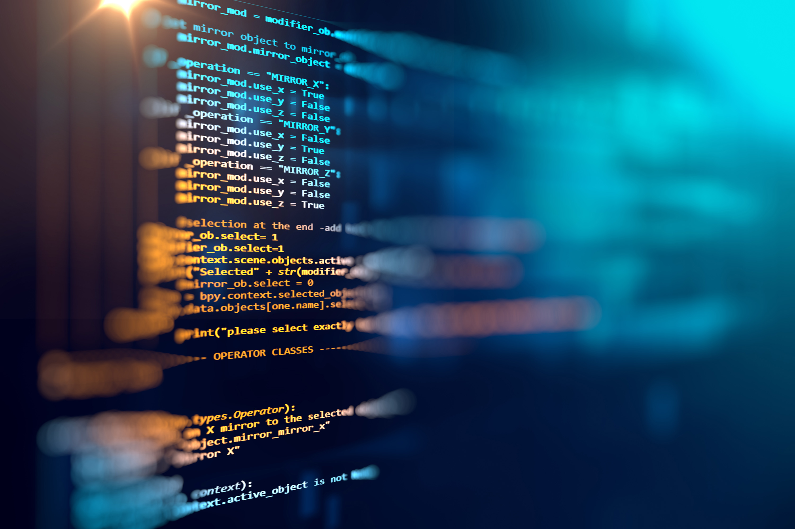

About Me


- 
I am Edem (/ɛd-ɛm/) Koshi Nuviadenu. I am currently a 3rd year Computer Engineering student in McGill University, Canada but my home country is Ghana. I am passionate about technology and love learning new skills, especially if it means I get to build impactful products. I like to see the opportunity in every challenge because I am a strong believer in focusing on goals and not obstacles.
My passion for tech really came to light from my love and desire to understand and build circuit boards. My interest in software dev grew from my initial implementation of art designs using turtle command in python prior to me starting university but I never really understood the complexity of what I did until my journey to Canada to study Electrical Engineering.
I began my university studies at McGill University in 2017. After taking my first software development class in both Java and C, I was immediately hooked and enjoyed the thrill and opportunity of seeing code that I implemented actually working.
Today, my passion for tech has become more of how I can harness and shape my skills in order to be able to take a product from idea to completion. My goal is to be able to contribute to my society through building impactful/meaningful products that positively impact my community.
.JPG)
.JPG)
.JPG)
.JPG)
.JPG)
.png)
.png)
.png)